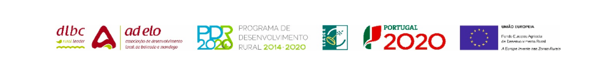

Bem-vindo ao Quiz das Rotas do Património!
Preparado para explorar a rica história e cultura de uma das regiões mais fascinantes de Portugal? Neste jogo, vais ser desafiado a testar os teus conhecimentos sobre as Rotas do Património, um projeto que promove o turismo e o património natural e cultural de seis municípios únicos: Figueira da Foz, Mira, Cantanhede, Penacova, Montemor-o-Velho e Mealhada.
As rotas estão divididas em três grandes temas: a Rota da Água, que destaca os recursos hídricos da região; a Rota da Pedra, que explora a geodiversidade e as formações rochosas; e a Rota das Praias, que te leva a descobrir as belas zonas costeiras e praias da região. Cada tema oferece uma experiência única e educativa, permitindo-te conhecer mais sobre este território fascinante.
Aceita o desafio e descobre o quanto sabes sobre esta região, respondendo a perguntas e curiosidades sobre as Rotas do Património. Vamos ver quantos pontos consegues acumular e quão bem conheces o património deste território!
